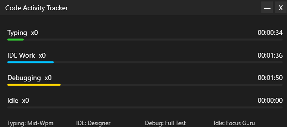
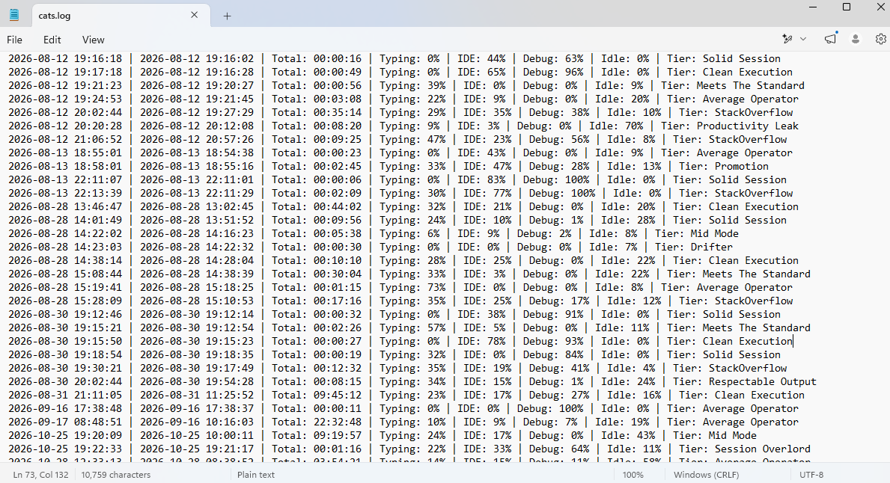

Code Activity Tracker (CATS) is a lightweight Windows utility built with .NET 10 that monitors real developer activity using operating-system signals including keyboard input, mouse movement, Visual Studio interaction, idle time, and debugging activity. The goal was simple: measure how development time is actually spent without relying on manual time tracking or arbitrary productivity scores.

Most productivity tools depend on manual time tracking or simplistic productivity scores that do not reflect how software development really works.
I built Code Activity Tracker to measure actual behavior using operating-system signals. The application continuously monitors typing, IDE usage, debugging activity, mouse movement, and idle time to produce a more realistic view of development sessions.

Code Activity Tracker was originally built to answer a simple question: where does development time actually go? Typing, reading code, debugging, and idle time all contribute to a development session, so accurate debugger detection became a core requirement.
The challenge was that the tracker runs as a completely separate process. Standard APIs such as Debugger.IsAttached only identify whether the current process is being debugged, making them ineffective for detecting external debugging sessions.
What appeared to be a simple problem quickly turned into a deep investigation. Parent-process tracing, WMI queries, process-tree analysis, handle inspection, thread-state monitoring, CPU sampling, window correlation, and Visual Studio helper-process tracking were all tested and ultimately discarded due to false positives, inconsistent results, or reliability issues.
Web applications proved especially difficult because Visual Studio often launches multiple processes, services, and helper components behind the scenes. Identifying the actual debug target from outside the debugging session became far more complicated than expected.
The final implementation relied on Visual Studio's active window information and process correlation to determine whether a debugging session was active. The solution ended up being much simpler than many of the approaches investigated and proved to be the most reliable in real-world use.
I documented the entire investigation, including the failed approaches, reasoning, and final implementation in a dedicated article.
View the source code to see how Code Activity Tracker monitors development activity, classifies sessions, and tackles the problem of external debugger detection.